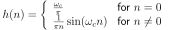

Next: IIR Filter Up: Causal Signal Processing Previous: FIR filter design with Contents
How to build a correlator with a filter? Definition of filtering?
 (136)
(136)
 , only valid for
, only valid for  .
.
|  |  |
(137) | |
|
 |
(138) |
 we get:
we get:
 by reversing the template
by reversing the template  in time and
constructing an FIR filter with it.
in time and
constructing an FIR filter with it.
How to improve the matching process? Square the output of the filter!